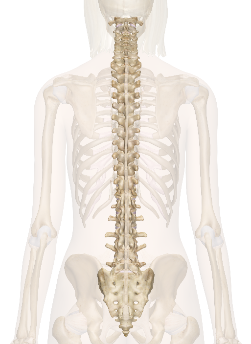
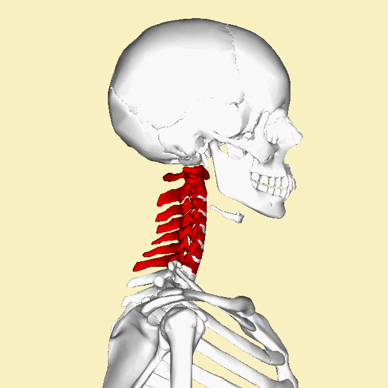

Backbones

Spine or the spine or spondylitis living organisms Vertebrate a component of a series of vicious paragraphs
to save the spinal cord , which runs where and when the number of paragraphs 33 human paragraph. The space
in which the spinal cord resides is called the vertebral canal .
. Human
The spine consists of a series of irregular bones called vertebrae. At birth, the spine has two curves backwards
in the thoracic region and the sacrococcygeal region (pelvic region). These are called primary curvatures. After
the child begins to raise his head, the cervical region begins to bulge forward, and then when he begins to sit
and stand, the lumbar cusp begins to appear forward and they are called secondary curvature, and these two
appear to balance the primary curves These bends become more noticeable when the child begins to stand up.
Between the twelfth month and the eighteenth month, the bumps are integrated after each other with strong and
flexible ligaments sufficient to give it rigidity and allow it to make the usual movements and to transfer and
distribute the weight of the body to the lower extremities through the pelvis. The spinal cord also gives the
body its natural shape, which is an erection. The movement between each two vertebrae is small, but the sum of
this movement results in a degree of change in the longitudinal axis of the spine, so the column bends forward
and backward in the various sections of the spine to the same degree. Flexion and extension occur between the
thoracic vertebrae to help respiratory movements, so the forward or backward curvature of the spine is narrow in
the thoracic region and wide in extent in the cervical and lumbar regions.
The adjacent vertebrae are similar in their general appearance, but differ in terms of size. Their sizes are not
equal. For example, the cervical vertebrae differ greatly from the lumbar vertebrae in size and shape, and
because of the increase in the weight that the vertebrae bear, so their size and strength increases from top to
bottom. This increase starts from the second cervical vertebra (axis) until The first thoracic vertebra, where
the body of the second, third, and fourth thoracic vertebrae shrinks, and sometimes to the sixth, and then
begins to gradually increase again until it reaches its maximum at the fifth lumbar vertebra, after which it
begins to decrease from the lumbosacral angle to the end of the coccyx. From this it is clear that the lower
lumbar vertebrae, especially the fifth, are the largest and most powerful vertebrae in the spine.
Posteriorly, the spine is characterized by the presence of a series of spinous processes along the mediastinal
line from the second cervical vertebra to the fourth sacral vertebra. These spinous protrusions are divided into
two halves, except for the spinous processes of the seventh cervical and lumbar vertebrae. The direction of
these protrusions is downward in all cervical vertebrae except for the seventh cervical and thoracic vertebrae
(except for the first, eleven and twelfth thoracic vertebrae) or they are parallel to the surface of the ground
as in the lumbar and sacral vertebrae. The seventh cervical, first thoracic, eleventh and twelfth cervical
regions) and these protuberances converge from each other in the thoracic region, especially in the midsection
of the chest, and diverge in other regions.
The end of the spinous protrusions when not cleaved is rounded, as is the case in the cervical region and
thoracic vertebrae, except for the eleventh and twelfth thoracic vertebrae, and all the lumbar and sacral
vertebrae are quadruple in shape. back deep erector of the following paragraphs share impoverishment of
anatomical characteristics so named the following description as paragraph model consists of peduncle , plate ,
extrusion cord , extrusion browser , facet articular , aperture intervertebral .
The spinal cord ends at the lower edge of the first lumbar vertebra, so the rest of the vertebral canal and the
bottom of the first lumbar vertebra, consisting of the second, third, fourth and fifth lumbar vertebrae and the
sacrum, are occupied by the descending spinal nerves diagonally to exit their intervertebral openings. In
addition to the spinal cord, the vertebral canal contains the meninges that surround the spinal cord and the
meninges continue below the end of the spinal cord. The spinal cord is protected and preserved by its presence
within the vertebral canal, so it is not twisted, confined, or shortened in all the movements of the spine, as
the meninges and then the ligaments that connect the sides of the vertebral canal preserve it, as well as the
cerebrospinal fluid that surrounds the spinal cord and absorbs tremors, jerks and shocks because the fluid turns
to the point that The spinal cord may be affected by spinal movements because it is firmly sandwiched between
the pia mater and the arachnoid mater..
The components of the typical vertebra differ in terms of shape and size in the cervical, thoracic and lumbar
spine regions, and this difference affects the connection and movements in each of these three regions of the
spine. And outward instead of forward and backward, as in the cervical vertebrae.
. Paragraphs

Paragraphs 33 paragraphs arranged from top to bottom:
Zulfikar colli ( in English : Cervical Vertebrae ) - a 7 vertebrae (C1-C7)
C1 is called the "atlas" or "atlas" and is the vertebra that stabilizes the skull, C2 is called the "axis"
spondylosis of small sizes
Spondylitis Chest ( English : Thoracic Vertebrae ) - a 12 - paragraph (T1-T12)
Combined with the ribs that extend forward, the ribs form the rib cage
Paragraphs are of medium size
Lumbar vertebrae ( in English : Lumbar Vertebrae ) - a 5 vertebrae (L1-L5)
Paragraphs are large
Sacral ( English : Sacrum ) - a 5 paragraphs (S1-S5) to be attached to each other deficit (conjunctiva made
up one bone)
Paragraphs sacral ( English : Coccyx ) - a 4 paragraphs (sometimes 3 or 5) attached to each other to be
coccyx
Therefore, the spine consists of 26 bones, including the sacrum and the coccyx, and its length is 70 cm, and
it is longer in men than in women. It is a column that is not straight, but rather has bends in its
different areas, with the line of gravity matching the line of the spine.


. Bends
When the spine is viewed from the side (as in the picture), we see 4 different curvatures:
Cervical curvature: a convex curvature, convex forward, which is small and starts from the first cervical vertebra and ends in the middle of the second thoracic vertebra.
Thoracic curvature: a concave curvature, its convexity backward starting from the end of the cervical convexity and ending with the 12th dorsal vertebra.
Lumbar curvature: convex curvature, convexity forward and is more pronounced in women, starting from the twelfth dorsal vertebra and ending with the fifth lumbar vertebra at the lumbosacral angle.
Pelvic or sacrococcygeal curvature: a concave curvature, its convexity backward starting from the lumbosacral angle and ending at the pointed end of the coccyx.
Pathological curvatures may occur on the spine that cause the spine to curve to the right or left, and this pathological picture of curvature is called scoliosis , curvature of the spine or kyphosis .
As for naming the curves as concave and convex according to what you see from the front if we were able to look at them from this direction, but if we want to describe them as they appear to the eye, i.e. when looking from the dorsal back side, the labels will be reversed and the convex becomes concave and vice versa, but this method of naming is not followed in scientific nomenclature .
. Ligaments
There are different ligaments involved in the cohesion of the vertebrae in the column and in the movement of the column.
The anterior and posterior longitudinal ligaments run along the spine, along the front and back of the vertebral bodies.
Inter-vertebral ligaments connect the spinous processes adjacent to the vertebrae. The supraspinal ligament runs along the spine along the back of the spinous processes,
from the sacrum to the seventh cervical vertebra. From there it continues as the nuchal ligament.
. Growth
The astonishing segmented pattern of the vertebral column forms during fetal development when somites are symmetrically added to the posterior portion of the fetus. Somite formation begins around the third week when the fetus begins gastrulation and continues until about 52 somites are formed. The somites are globules, formed from the adjacent mesoderm on either side of the neural tube, and containing the precursors of the bones of the spine, ribs, vertebrae, and some bones of the skull, as well as muscles, ligaments, and skin. Controls the formation of somitesand its subsequent distribution by a clock and waveform pattern operating in the cells of the adjacent mesoderm. Soon after its formation, the osteoblasts migrate, giving rise to some of the bones of the skull, vertebrae, and ribs, leaving the remainder of the somite, which is now called sarcomere. Those are then subdivided to give a few sarcoids that make up the muscles, and a slip that makes up the skin of the back. The osteoblasts are divided into two compartments, anterior and posterior. This subdivision plays a major role in the final profiling of vertebrae that form when the posterior portion of a somite fuses with the anterior portion of a successive somite during a process called refractionation. Disruption of somite formation in humans results in diseases such as congenital scoliosis. To date, human homologs of three genes associated with the mouse segmentation clock (MESP2, DLL3, and LFNG) have been shown to be mutated in cases of congenital scoliosis, indicating that the mechanisms involved in vertebral segmentation are conserved across vertebrates. In humans, the first four somites fuse at the base of the occipital bone in the skull, after which the next 33 somites form the vertebrae, ribs, muscles, ligaments, and skin. remaining posterior somites degenerate. During the fourth week of fetal development, osteoblasts shift their position to surround the spinal cord and notochord . This column of tissue has a segmented appearance, with areas alternating between denser and less dense areas.
As the osteoblasts develop, they eventually condense further and transform into the vertebral body. The development of appropriate shapes of vertebral bodies is regulated by sculpting genes.
Less dense tissue separating the osteotomies develops into the vertebral discs .
The notochord disappears in the vertebral segments (the vertebral body) but persists in the region of the vertebral discs as the nucleus pulposus. The nuclei pulposus and the annulus fibrous fibers form the intervertebral disc.
Primary bends (thoracic and sacral bends) are formed during fetal development. Secondary curvatures develop after birth. Cervical curvature is formed as a result of raising the head and lumbar curvature is formed as a result of walking.
Job
The spine surrounds the spinal cord, which travels into the spinal canal, which in turn consists of a central hole within
each vertebra. The spinal cord is the part of the central nervous system responsible for supplying nerves and receiving
information from the peripheral nervous system within the body. The spinal cord consists of gray matter, white matter,
and a central cavity, which is the central canal. Spinal nerves emanate next to each vertebra. The spinal nerves provide
a sympathetic nerve supply to the body, with emanation of the nerves that make up the sympathetic trunk and visceral
nerves.
The spinal canal follows the different curves of the spine. It is large and triangular in the parts of the spine that
have the greatest freedom of movement, such as the cervical and lumbar regions, and it is small and rounded in the
thoracic region.
The spinal cord ends in the conus medullaris and the cauda equina.
. Other living organisms
The spine in tetrapods:
Specialization in the regions: The first vertebra is articulated in the kinematics of the skull, such as:
The vertebrae of the neck and the thoracic vertebrae were found to which the ribs are connected, which form a thoracic
cage to protect the heart and lungs and participate in the excretory breathing
Lumbar
sacral vertebrae
We find that snakes have more than one backbone in the vertebrae and may reach 400 vertebrae.
Cervical vertebrae , connection of the skull to the spine:
Amphibians: There is one cervical vertebra that does not have transverse projections, but bears in front two concave
surfaces. This articulation allows for limited dorsal ventral movement of the skull.
Alrhalayat: The area of the ruqyah is long, with many cervical vertebrae
Birds and turtles: have flexibility of movement, because the vertebrae articulate on the back surfaces of the vertebral
bodies, similar to the saddle of a horse.
Mammals: There are 7 cervical vertebrae, whether the neck is long, as in the giraffe, or short, as in the rat.
Disability and equilibrium of the anterior limb: the sacral vertebrae have short and wide lateral protuberances and are
strong to bear the pressures of the pelvic girdle when the posterior limb is pushed above the ground.
Amphibians: one sacral
Reptiles and birds: two sacral
Mammals: 3-5 sacral vertebrae united into one bone called the sacrum
caudal vertebrae:
Frogs and toads: one tailbone (pen-tail) at the end of the spine
Reptiles: There are many caudal vertebrae
Lizards: they leave their tail when caught, then the missing part is renewed
Birds: There is a tail, but it is not prominent - there are 15 vertebrae in the tail of the pigeon
Mammals: The number of caudal vertebrae varies from 3-50
All tetrapods: the vertebrae are small cylindrical bodies
Human: 4-5 atrophic vertebrae compared to the stylus of the tail. In birds, they fuse with each other to form the coccyx